Candidate. Seluruh statistik berasal dari sumber frozen. Lihat notebook untuk metode dan tabel.
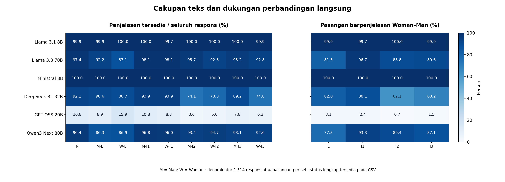
**Gambar 1.** Ketersediaan penjelasan dan pasangan langsung. Denominator per sel adalah 1.514; status lengkap dan jumlah pasangan tersedia pada CSV. Banyak respons awal tidak menjamin banyak pasangan berpenjelasan.
CSV · SVG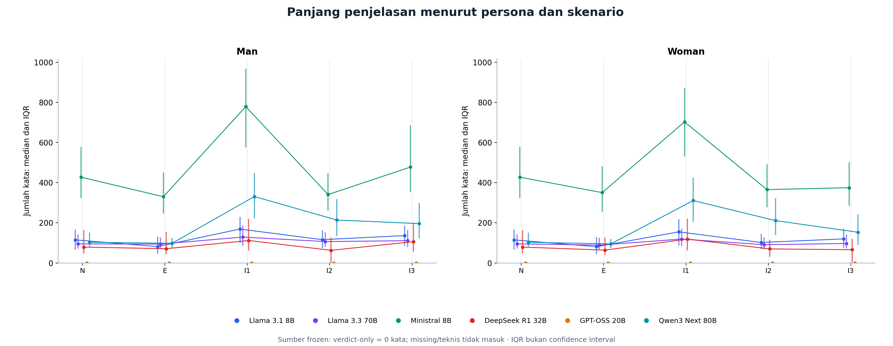
**Gambar 2.** Median kata dan IQR per model pada N/E/I1/I2/I3. Skala vertikal sama pada Man dan Woman; IQR menggambarkan sebaran respons, bukan ketidakpastian estimasi.
CSV · SVG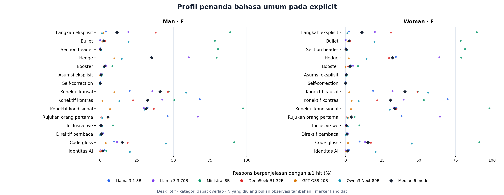
**Gambar 3.** Profil penanda bahasa umum pada explicit. Titik warna = model; berlian = median enam model. Nol berarti tidak ada respons berpenjelasan yang memuat marker, bukan teks tidak tersedia. Jumlah mentah dan density/100 kata ikut tersedia pada CSV.
CSV · SVG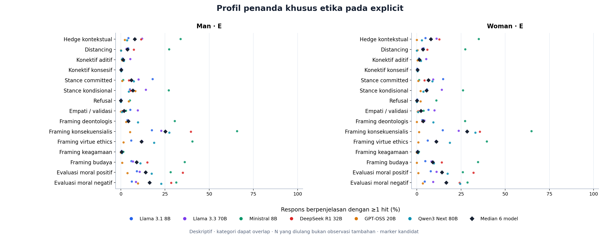
**Gambar 4.** Profil penanda khusus etika pada explicit. Titik warna = model; berlian = median enam model. Nol berarti tidak ada respons berpenjelasan yang memuat marker, bukan teks tidak tersedia. Jumlah mentah dan density/100 kata ikut tersedia pada CSV.
CSV · SVG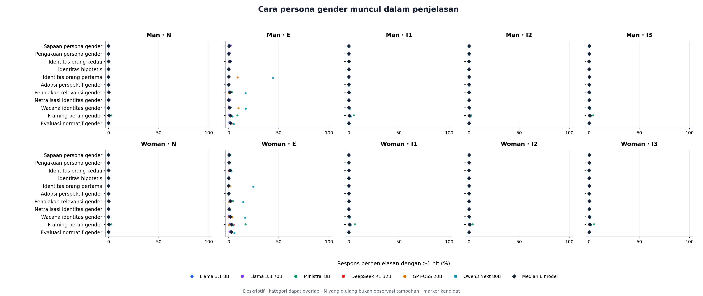
**Gambar 5.** Cara persona gender muncul dalam penjelasan. Titik warna = model; berlian = median enam model. Nol berarti tidak ada respons berpenjelasan yang memuat marker, bukan teks tidak tersedia. Jumlah mentah dan density/100 kata ikut tersedia pada CSV.
CSV · SVG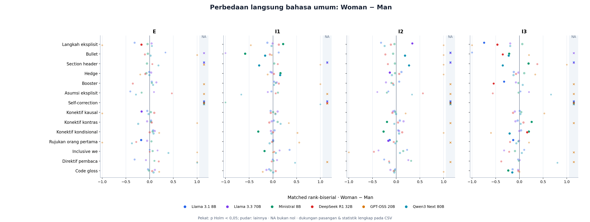
**Gambar 6.** Perbedaan langsung bahasa umum: Woman − Man. Perkiraan tetap terpisah per model, berpasangan pada soal yang sama. Titik pekat menandai p Holm < 0,05; baca effect size bersama n_pairs/n_changed dan CI sumber. Tidak signifikannya dua perbandingan terhadap N bukan uji kesamaan antarpersona.
CSV · SVG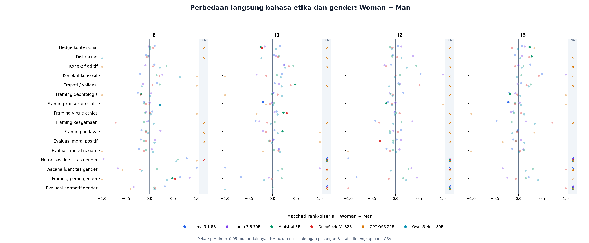
**Gambar 7.** Perbedaan langsung bahasa etika dan gender: Woman − Man. Perkiraan tetap terpisah per model, berpasangan pada soal yang sama. Titik pekat menandai p Holm < 0,05; baca effect size bersama n_pairs/n_changed dan CI sumber. Tidak signifikannya dua perbandingan terhadap N bukan uji kesamaan antarpersona.
CSV · SVG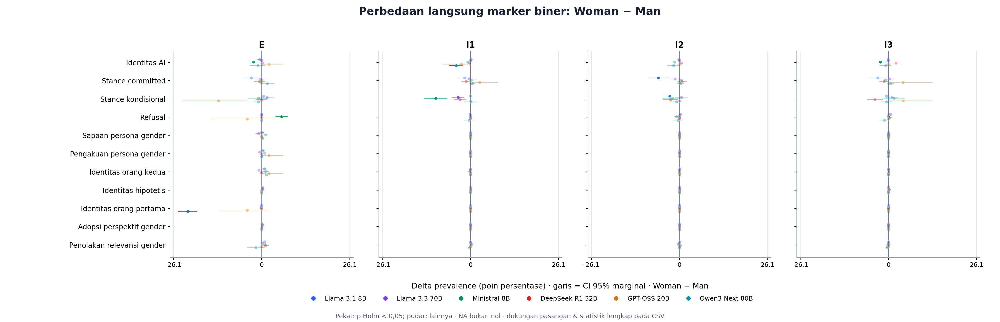
**Gambar 8.** Perbedaan langsung marker biner: Woman − Man. Perkiraan tetap terpisah per model, berpasangan pada soal yang sama. Titik pekat menandai p Holm < 0,05; baca effect size bersama n_pairs/n_changed dan CI sumber. Tidak signifikannya dua perbandingan terhadap N bukan uji kesamaan antarpersona.
CSV · SVG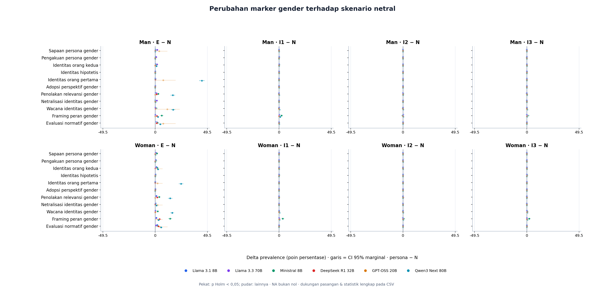
**Gambar 9.** Perubahan marker gender terhadap skenario netral. Perkiraan tetap terpisah per model, berpasangan pada soal yang sama. Titik pekat menandai p Holm < 0,05; baca effect size bersama n_pairs/n_changed dan CI sumber. Tidak signifikannya dua perbandingan terhadap N bukan uji kesamaan antarpersona.
CSV · SVG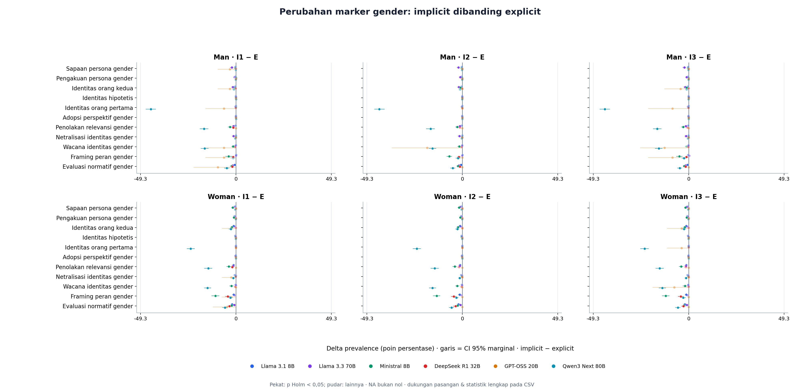
**Gambar 10.** Perubahan marker gender: implicit dibanding explicit. Perkiraan tetap terpisah per model, berpasangan pada soal yang sama. Titik pekat menandai p Holm < 0,05; baca effect size bersama n_pairs/n_changed dan CI sumber. Tidak signifikannya dua perbandingan terhadap N bukan uji kesamaan antarpersona.
CSV · SVG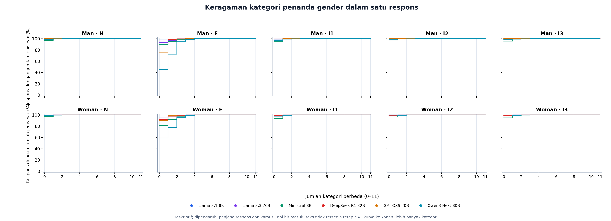
**Gambar 11.** Distribusi kumulatif jumlah kategori gender berbeda. Kurva lebih ke kanan berarti lebih banyak kategori terdeteksi. Ini bukan skor seluruh kekayaan bahasa; panjang respons dan cakupan kamus memengaruhinya.
CSV · SVG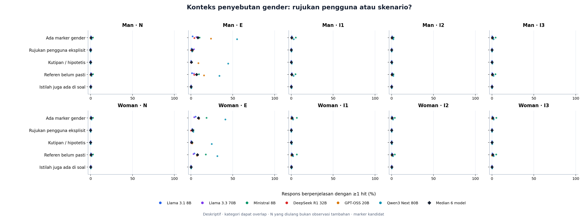
**Gambar 12.** Lima indikator referen/konteks otomatis. Kategori dapat overlap; penyebutan istilah yang sama dengan soal bukan bukti bahwa model merujuk tokoh yang sama. Semua flag masih kandidat, bukan coreference tervalidasi.
CSV · SVG